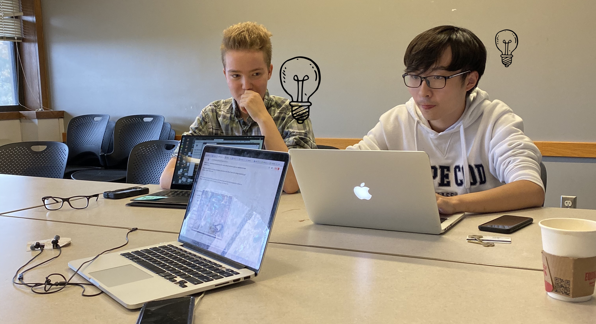

About Us
Market to the Go is a grocery store dedicated to accesible, ethical, and affordable food access. We are proud to do provide the top products to students both on and off campus in order to promote healthy living for those who don't always feel like they have the time.
We first opened in 1999 when Tufts University Undergrad Eregen Badlock found himself in quite the predicament. Caught in the crosshairr of his studies as a triple major, his passion for healthy produce, and his college budget, Eregen found himself struggling to keep up.
In an effort to find a way out of the challenges he found facing himself and his peers, Eregen decided to act. He collobrated with masters of produce, veterans of delivery, and students with their fingers to the pulse. Market to the Go is the brainchild of this collaboration. Since it's foundation, Market to the Go has grown into a multimillion dollar enterprise, spanning three cities and helping more five thousand students. We are proud of our past and even prouder of our future, as a team and as a company.
